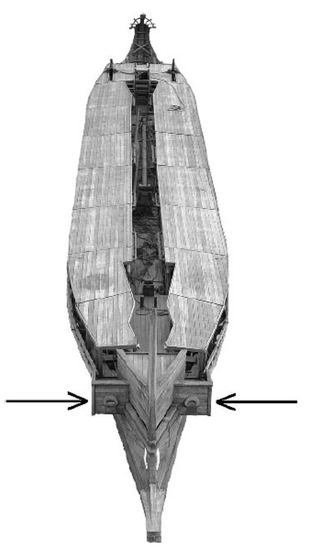
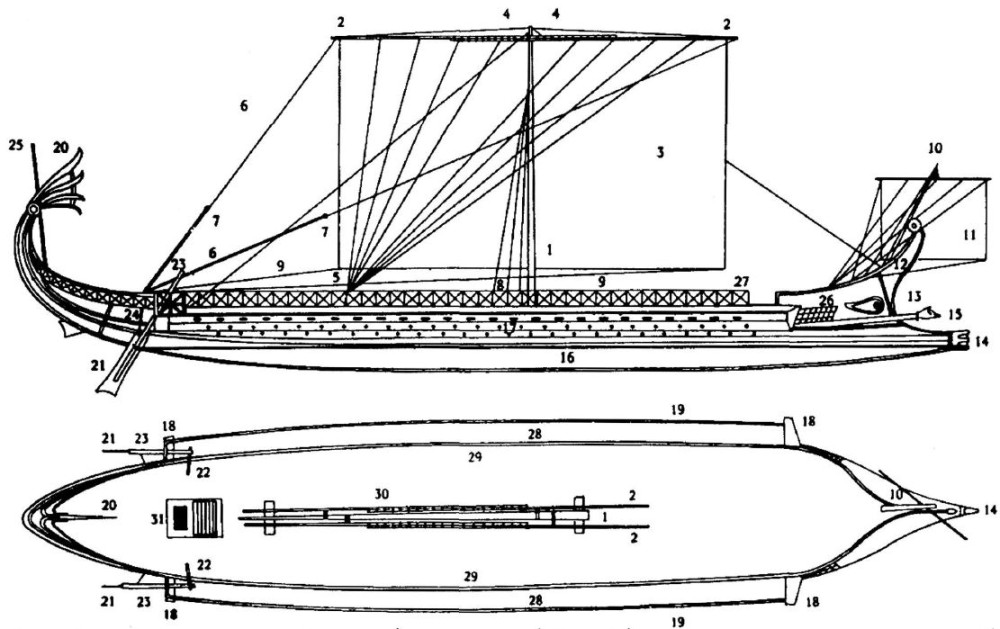
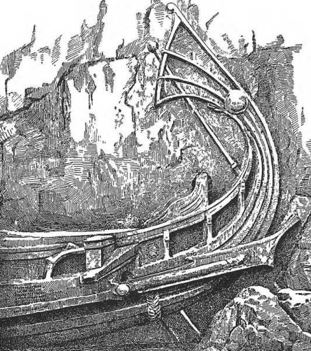

С творчеством Полиэна мы познакомились, когда рассматривали подготовку новых гребцов для триер и перемещение триер по суше. Там было все более или менее понятно и неудобных вопросов не возникало. Другое дело сейчас, когда мы собираемся обсудить роль, которую Полиэн отводил эпотидам.

Эпотиды, как их понимают создатели реплики афинской триеры Olympias
Начнем с описания (5.43) действий кормчего (κυβερνήτης) одного из кораблей афинского флота Каллиада (Καλλιάδης). Вот как эта стратегема выглядит в переводе И.В.Косинцевой:
43. КАЛЛИАД
Каллиад-кормчий, настигаемый более быстрым кораблем, постоянно удерживал руль с той стороны, с которой тот собирался атаковать, чтобы преследователь, наткнувшись на брусья против руля, не мог ударить его тараном по первым транитидам.
Полиэн. Стратегемы. Кн.5. Спб, Евразия, 2002, стр. 204.
Переводчица снабдила текст такими примечаниями:
Каллиад принимал участие в битве при Аргинусских островах (острова, лежащие между островом Лесбос и Малой Азией) в 406 г. до н. э., в которой афиняне нанесли поражение пелопоннесскому флоту.
'Еπωτίθεα — брусья, выдававшиеся подобно ушам с обеих сторон передней части военного корабля. Служили для отражения удара неприятельского корабля и для нанесения удара со своей стороны, иногда для укрепления якоря.
Транитиды — весла транитов — гребцов, сидящих на верхней скамье триеры.
Вам, читающим эти строки, хорошо понятен смысл перевода?
Вот для справки текст оригинала:
Καλλιάδης κυβερνήτης καταλαμβανόμενος ὑπὸ νεὼς ταχυτέρας τὸ πηδάλιον ἔσχαζε συχνῶς, καθ᾿ ὁπότερον ἂν ἐμβάλλειν μέλλοι, ἵνα ὁ διώκων προσκρούων ταῖς ἐπωτίσι πρὸς τὸ πηδάλιον ἐμβαλεῖν μὴ δύνηται τῷ τὴν ἐμβολὴν εἶναι κατὰ τὰς πρώτας θρανίτιδας
Начнем с того, кем был Каллиад и к какому времени относится этот эпизод. Каллиад – довольно распространенное имя и некоторые исследователи нашего деятеля относят события данной стратегемы к I в до н.э., а не к 406 г., но это нам сейчас не выяснить с уверенностью. Поэтому обратимся к тексту перевода.
Начало фразы трудностей не представляет, но вот то место, где в дело вступает Каллиад как рулевой, требует дополнительных разъяснений. У Косинцевой мы читаем, что Каллиад
«постоянно удерживал руль с той стороны, с которой тот (преследователь) собирался атаковать».
Тарн, один из первых историков, который обратил внимание на эту стратегему Полиэна, переводит эти слова так:
«Calliades, … kept using his steerage frequently, according as (the pursuer) tried to ram now from one side and now from the other»
Каллиад… продолжал часто использовать руль, в зависимости от того, как (преследователь) пытался таранить его то с одного, то с другого борта
Читаем дальше. У Косинцевой
чтобы преследователь, наткнувшись на брусья против руля, не мог ударить его тараном
Понимать это надо так, что преследователю угрожают брусья (эпотиды) корабля Каллиада, находящиеся «против руля», так как наткнуться можно на что-то внешнее, а не на часть тебя самого. Можно наткнуться лбом на дерево, но не деревом на лоб.
У Тарна это место переведено так
чтобы преследователь, ударяясь об его руль своими эпотидами, не мог таранить
Здесь уже речь идет об эпотидах преследователя, которыми он может наткнуться на рулевое весло Каллиада.
Честно говоря, не вдохновляет ни первый, ни второй вариант. Если стать на сторону Косинцевой, то необходимо признать, что эпотиды были размещены не только в носу, как это мы утверждали в предыдущем нашем рассказе, так и в корме, напротив рулевого весла или рядом с ним. Может такое быть? А почему бы и нет. Вот чертеж римского корабля

Римский корабль и его оснастка
где цифрой 18 обозначены носовые и кормовые эпотиды. Полиэн писал во II веке н.э., так что он вполне себе мог представить, что и за полтысячи лет до него триеры имели и носовые, и кормовые эпотиды.
У Тарна – речь идет об эпотидах атакующего корабля, что естественно для наших представлений об этом элементе, но возникает вопрос: можно ли рулевым веслом остановить идущий на таран корабль противника?
И наконец, заключительная часть фразы.
Косинцева:
(чтобы преследователь)…, не мог ударить его тараном по первым транитидам.
Тарн:
(чтобы преследователь… не мог таранить) по причине, что его таран находился напротив первых (т.е. самых ближних к корме) весел транитов.
Т.е. здесь Тарн вновь подчеркивает свою точку зрения, согласно которой гребцы делились на группы (траниты, зигиты, таламиты) не по ярусам сверху вниз, а по отрядам с кормы в нос. И самыми близкими к корме были как раз траниты.
Объективности ради отметим, что задолго до работы Тарна (1905) появился первый перевод Стратегем Полиэна на английский язык, сделанный Шепердом (R.Shepherd, 1793). Вот его адаптированный к современному языку текст:
Calliades, the master of a ship, was overtaken by a warship before he could reach port. Calliades so managed his rudder, as to receive upon it the oars of the enemy's first bench, and thereby he broke the force of their attacks upon his stern. By this means, he kept them away for some time, and under cover of night he succeeded in escaping.
Каллиад, шкипер корабля, был настигнут военным кораблем прежде, чем он смог достигнуть порта. Каллиад управлял своим рулем таким образом, чтобы руль принял на себя весла гребцов первой банки противника, чем ослаблял их атаку на свою корму. Таким образом он удерживал противника на дистанции на некоторое время и под покровом ночи сумел уйти.
Здесь вообще нет такого элемента, как эпотиды.
Кассон переводит стратегему Полиэна 5.43 следующим образом:
Calliades … "again and again eased the helm on whatever side the enemy sought to attack so that the pursuer, hitting the cheek of his outrigger against the steering oar, could not strike, since his ram was against the sternmost thranite rowers"
Каллиад … «вновь и вновь выводил руль на той стороне, где противник пытался атаковать, так что преследователь ударяясь передней плоскостью своего аутригера о рулевое весло, не мог таранить, так как его таран находился напротив самых ближних к корме весел транитов»
Casson, Lionel (1971), Ships and seamanship in the anciet world
Сделаем некоторые замечания к нашему переводу. Выражение «eased the helm». (Кассон заменяет словом ease греческое ἔσχαζε, [выбрав вариант перевода "let go" (мор. травить (снасть)) ]
В отношении руля eased the helm означает Выводи руль!— "приказаніе рулевому ставить руль прямѣе, когда онъ былъ положенъ на бортъ." (Вахтин)
Кассон комментирует свой перевод следующим образом: Каллиад переводит рулевое весло на борту, которому угрожает атака противника, в неподвижное горизонтальное положение, как это можно видеть, например, на следующем изображении родосского корабля (200 г. до н.э.),

чем парировал попытку атаки со стороны преследователя. Но тут же автор этой гипотезы признает, что легкая лопасть рулевого весла вряд ли способна противостоять удару массивных эпотидов.Это, в частности, понимал и Тарн, который считал, что своими действиям с рулевым веслом Каллиад всего лишь выбирал неудобную для враждебной атаки позицию своего корабля, переводя свое судно в конце концов на параллелльный преследователю курс, не допускающий удара тараном, в конце концов вынуждая противника делать многочисленные рывки для атак и вконец изматывая его.
Выдвигая одну за другой гипотезы относительно расположения эпотидов, их формы и направления относительно диаметральной плоскости корабля, мы все же не можем зацепиться хотя бы за какой-нибудь факт, чтобы представить себе картину полностью. Мы не можем даже разумно интерпретировать дошедшие до нас тексты, как это имеет место со стратегемой Полиэна 5.43.
В следующий раз предпримем еще одну попытку.